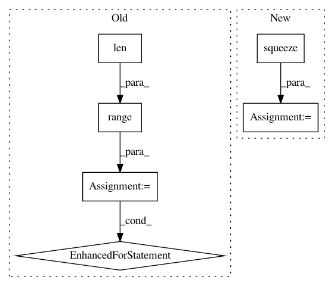

f6f6ee1df8d619d9816a5296bebca5736fa952bf,translate.py,,main,#,67
Before Change
gold_score_total += sum(gold_score)
gold_words_total += sum(len(x) for x in batch.tgt[1:])
for b in range(len(pred_batch)):
count += 1
for n in range(opt.n_best):
out_file.write(" ".join(pred_batch[b][n]) + "\n")
out_file.flush()
if opt.verbose:
words = []
for f in src[:, b]:
word = translator.fields["src"].vocab.itos[f]
if word == onmt.IO.PAD_WORD:
break
words.append(word)
os.write(1, bytes("\nSENT %d: %s\n" %
(count, " ".join(words)), "UTF-8"))
index += 1
os.write(1, bytes("PRED %d: %s\n" %
(count, " ".join(pred_batch[b][0])), "UTF-8"))
print("PRED SCORE: %.4f" % pred_score[b][0])
if opt.tgt:
tgtSent = " ".join(gold_batch[b])
os.write(1, bytes("GOLD %d: %s\n" %
(count, tgtSent), "UTF-8"))
print("GOLD SCORE: %.4f" % gold_score[b])
if opt.n_best > 1:
print("\nBEST HYP:")
for n in range(opt.n_best):
os.write(1, bytes("[%.4f] %s\n" % (pred_score[b][n],
" ".join(pred_batch[b][n])),
"UTF-8"))
report_score("PRED", pred_score_total, pred_words_total)
if opt.tgt:
report_score("GOLD", gold_score_total, gold_words_total)
After Change
z_batch = zip_longest(
pred_batch, gold_batch,
pred_scores, gold_scores,
(sent.squeeze(1) for sent in src.split(1, dim=1)))
for pred_sents, gold_sent, pred_score, gold_score, src_sent in z_batch:
count += 1
for n in range(opt.n_best):
out_file.write(" ".join(pred_sents[n]) + "\n")
out_file.flush()
if opt.verbose:
words = []
for f in src_sent:
word = translator.fields["src"].vocab.itos[f]
if word == onmt.IO.PAD_WORD:
break
words.append(word)
os.write(1, bytes("\nSENT %d: %s\n" %
(count, " ".join(words)), "UTF-8"))
index += 1
os.write(1, bytes("PRED %d: %s\n" %
(count, " ".join(pred_sents[0])), "UTF-8"))
print("PRED SCORE: %.4f" % pred_score[0])
if opt.tgt:
tgtSent = " ".join(gold_sent)
os.write(1, bytes("GOLD %d: %s\n" %
(count, tgtSent), "UTF-8"))
print("GOLD SCORE: %.4f" % gold_score)
if opt.n_best > 1:
print("\nBEST HYP:")
for n in range(opt.n_best):
os.write(1, bytes("[%.4f] %s\n" % (pred_score[n],
" ".join(pred_sents[n])),
"UTF-8"))
report_score("PRED", pred_score_total, pred_words_total)
if opt.tgt:
report_score("GOLD", gold_score_total, gold_words_total)
In pattern: SUPERPATTERN
Frequency: 3
Non-data size: 6
Instances
Project Name: OpenNMT/OpenNMT-py
Commit Name: f6f6ee1df8d619d9816a5296bebca5736fa952bf
Time: 2017-09-21
Author: bpeters@coli.uni-saarland.de
File Name: translate.py
Class Name:
Method Name: main
Project Name: NifTK/NiftyNet
Commit Name: 05e3f172899ec884896e30f1f2456b7d19f8860d
Time: 2017-05-26
Author: wenqi.li@ucl.ac.uk
File Name: layer/uniform_sampler.py
Class Name: UniformSampler
Method Name: layer_op
Project Name: scipy/scipy
Commit Name: 1dbecec6b552512cc3689fefd0311520837f1dda
Time: 2015-03-29
Author: cwrowley@princeton.edu
File Name: scipy/signal/ltisys.py
Class Name:
Method Name: impulse